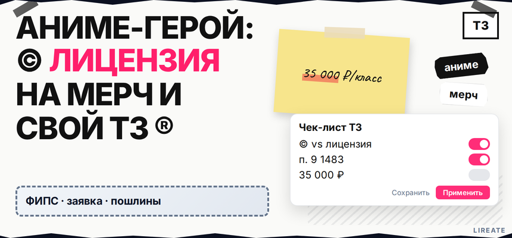
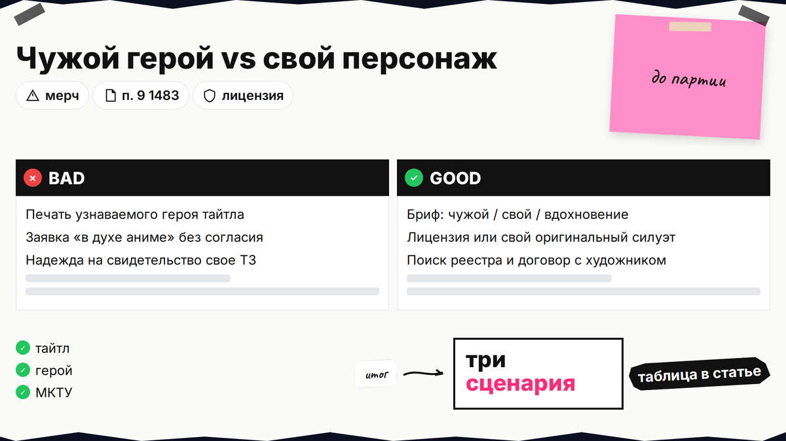
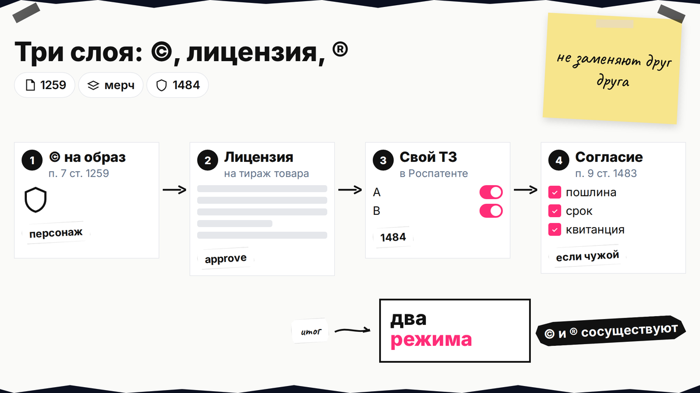
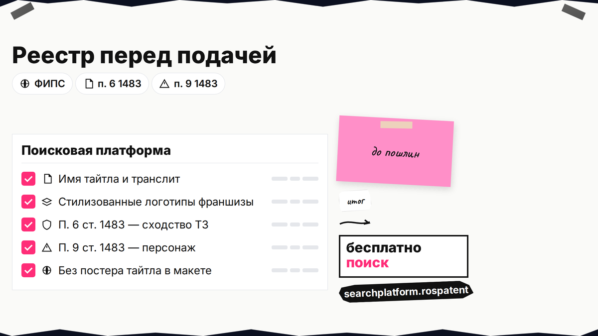

Хотите футболки с героем из популярного тайтла или подать в Роспатент логотип "в духе аниме" и надеетесь, что свидетельство закроет все вопросы? На практике узнаваемый персонаж живёт сразу в трёх режимах: авторское право на образ, лицензия на мерч и отдельная регистрация вашего товарного знака. Ниже вы отделите чужого героя от своего оригинального, проверите реестр, оцените риск отказа по п. 9 ст. 1483 ГК РФ и не запустите партию или заявку без письменного согласия правообладателя.

TL;DR / Быстрый инсайт: У аниме-героя могут сосуществовать два режима интеллектуальной собственности - © на персонажа как часть произведения (ст. 1225, ст. 1259) и товарный знак правообладателя франшизы (ст. 1484). Свидетельство на свой знак в Роспатенте не даёт права печатать чужого героя. Чужой узнаваемый персонаж без согласия - риск отказа по п. 9 ст. 1483 и претензий по © и ТЗ. Бюджет на новую заявку за 1 класс МКТУ - 35 000 ₽ по ПП РФ № 941 (льгота 30% на электронную подачу не действует с 05.10.2024). Материал не заменяет юридическую консультацию (17.11.2026).
Товарный знак - регистрация вашего обозначения для товаров; авторское право - охрана рисунка и персонажа. Свидетельство в Роспатенте не отменяет права студии на узнаваемого героя. Два слоя, как у картин в рекламе: чек-лист по изображениям в коммерции.

| Сценарий | Чужой герой? | Что делать |
|---|---|---|
| Футболка с конкретным героем тайтла | Да | Лицензия на мерч + проверка чужих ТЗ; без согласия - не печатать |
| Стиль "аниме", но другой силуэт и имя | Обычно нет | Поиск в реестре, договор с художником (L11), заявка на свой знак |
| Свой герой для веб-комикса и бренда | Нет | © у автора по договору, затем ТЗ в классах под товары (часто 25, 28, 35) |
| Коллаб с упоминанием названия тайтла | Зависит от макета | Отдельно оцените упоминание чужого бренда и образ на товаре |
Делайте: в брифе одной фразой назвите тайтл и героя, если они есть в макете. Не делайте: называть копию "переработкой" без юридической оценки сходства.

Ст. 1259 включает анимацию в охраняемые произведения; © с момента создания. Персонаж охраняется, если узнаваем отдельно от эпизода (п. 7 ст. 1259). Силуэт, костюм и имя на товаре - использование чужого произведения, а не "декор".
Схема: тайтл и герой → узнаваемость без контекста? → да: нужен правообладатель и лицензия → нет: проверьте свой эскиз и права художника → поиск чужих ТЗ → заявка на своё обозначение
Делайте: сохранить референсы и финальный макет с датами. Не делайте: считать, что "фанарт для себя" автоматически разрешает продажу на маркетплейсе.
Стрим/обложка и печать на товаре - разные ветки: "кадр vs товар". Карточка на МП с чужим героем - риск © и ТЗ франшизы (РБК).
| Действие | Без лицензии | С письменным договором |
|---|---|---|
| Печать на одежде | Риск нарушения © и ТЗ | Способы, территория РФ, approve макета |
| Использование имени героя в заявке ТЗ | Риск п. 9 ст. 1483 | Согласие правообладателя произведения в составе заявки |
| Покупка оригинальной фигурки | Не даёт право копировать дизайн на свои изделия | Только личное пользование вещью, не тираж |
Делайте: до партии запросить у дистрибьютора или лицензиара перечень полномочий. Не делайте: масштабировать продажи "пока не пришлют письмо".
Права у production committee или лицензиара: дистрибьютор РФ, издатель манги. В договоре - товары, территория, срок, approve макета (см. Kodansha Licensing). Устное согласие редко держит претензию на МП.
Делайте: хранить PDF лицензии, approve и счета в одной папке. Не делайте: подменять лицензию покупкой постера или стикерпака с тем же героем.

П. 6 ст. 1483 - сходство с ранним ТЗ в однородных классах. Поиск бесплатно на Поисковой платформе. Ст. 1484 запрещает сходные обозначения без согласия правообладателя знака.
Делайте: искать не только точное имя, но и транслит и стилизованные надписи. Не делайте: подавать заявку с изображением, скопированным с постера тайтла.
П. 9 ст. 1483 - нельзя регистрировать знак, сходный с известным в РФ произведением, персонажем, цитатой или фрагментом без согласия, если © старше приоритета заявки. Для имени и персонажа важна известность тайтла; для фрагмента изображения суды часто строже - не рассчитывайте на "никто не знает".
Итоговый вердикт: если в макете узнаваем чужой герой, сначала лицензия и согласие для Роспатента, и только потом заявка. Если герой ваш - договор с художником, усиление различительности и подача без чужих фрагментов.
Делайте: приложить к заявке согласие, когда в знаке спорный элемент. Не делайте: рассчитывать пройти экспертизу "под видом оригинального".
Новая заявка, 1 класс МКТУ (до 10 позиций), электронное свидетельство: 35 000 ₽ (4 000 + 13 000 + 18 000 по пп. 2.1, 2.4, 2.11 ПП РФ № 941). Таблица - на rospatent.gov.ru. Скидка 30% на электронную подачу отменена с 05.10.2024. Сопровождение своего знака: регистрация товарного знака. Не делайте: путать пошлину с лицензией на чужого героя.
Свой герой - папка доказательств и заявка. Чужой тайтл - сначала лицензия. Реклама и стрим: бренд, видео.
Кратко опишите задачу: мерч, свой персонаж, заявка в Роспатент. Подскажем следующий шаг по ГК РФ.
Материал проверен: редакция Lireate, практика ТЗ и лицензирования персонажей.
Достоверность данных: ст. 1225, 1259, 1483, 1484 ГК РФ, пошлины по ПП РФ № 941 и таблица Роспатента сверены на 17.11.2026; отраслевые обзоры - как вторичный слой. Не заменяет юридическую консультацию.
Если герой или фрагмент произведения узнаваемы, экспертиза опирается на п. 9 ст. 1483 без согласия правообладателя. Запросите письменное согласие или уберите чужие элементы из обозначения до подачи.
Лицензия - договор на конкретные товары и макеты с правообладателем ©. Свидетельство на ТЗ даёт вам монополию на ваше обозначение в выбранных классах. Одно не подменяет другое при работе с чужим тайтлом.
Нет. Покупка вещи не передаёт право на тираж с тем же образом. Для продажи нужна лицензия или свой оригинальный дизайн без сходства до смешения.
Сравнивают имя и сходство с известным в РФ произведением и персонажем, дату возникновения чужих прав и наличие согласия. Текстовое обозначение тоже попадает под п. 9.
Для имени и персонажа важна известность произведения в РФ на дату заявки. Для фрагмента изображения суды могут идти строже. Не стройте стратегию на "никто не знает".
Часто указывают класс 25 (одежда), 28 (игры и игрушки), 35 (продажи). Перечень должен совпадать с реальным ассортиментом; лишние классы увеличивают пошлины.
Да, если обозначение обладает различительностью, вы не копируете чужих героев и у вас оформлены права на рисунок с автором. Сначала договор по ©, затем поиск в реестре и заявка.